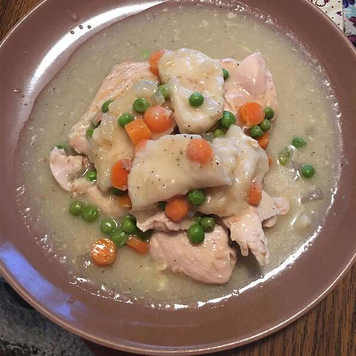

Slow Cooker Chicken and Dumplings

This is an easy slow cooker recipe that cooks while you are at work! We added more veggies and used natural (not condensed) soup to make this recipe healthier.
Nutrition Info
Nutrition Info
Prep: 10 Minutes
Cook: 5 hours 35 Minutes
Total: 5 hours 45 Minutes
Servings: 8
Yield: 8 Servings
Per Serving: 448 Calories; 29.7g Protien; 36.5g carbohydrates; 21.3g fat; 81.8mg cholesterol; 1400.4mg sodium
Ingredients
- 4 skinless, boneless chicken breast halves
- 2 teaspoons butter
- 2 cups cream of chicken soup
- 1 onion, finely diced
- 3 carrots. sliced
- 10 ounce refrigerated biscuit dough, torn into pieces
- 1 cup frozen peas
Directions
- Place chicken, butter, cream of chicken soup, and onion in a slow cooker. Cover and cook on High for 5 to 6 hours. Stir in carrots after 5 hours of cooking.
- Place torn biscuit dough in slow cooker 30 minutes before serving. Cook until dough is no longer raw in the center, about 25 minutes. Lift edges of biscuits and stir in peas. Let stand until warm, about 10 minutes, before serving.